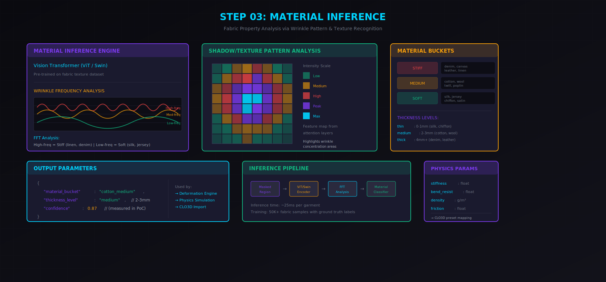
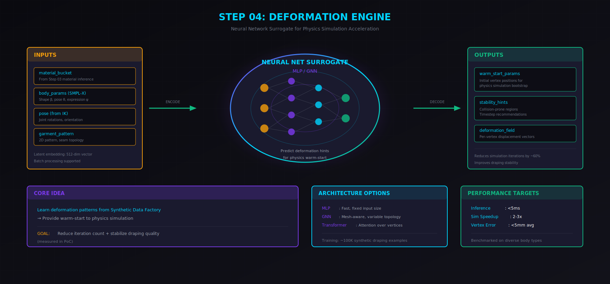
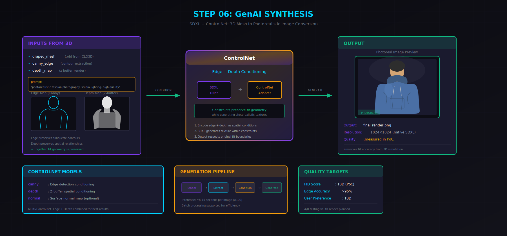

PIPELINE FLOW
How it works
사진 입력부터 최종 렌더링까지의 전체 파이프라인
STEP 01
PnP Calibration
참조 객체(A4용지, 마커 등)를 이용해 실제 스케일을 추정하고 카메라 포즈를 계산합니다. 픽셀 단위를 밀리미터로 변환하는 기초 단계입니다.
Reference Plane
A4용지, QR 마커 등 알려진 크기 객체 탐지
Camera Pose
cv2.solvePnP()로 카메라 위치 계산
Scale Factor
픽셀/mm 변환 비율 산출
Output
scale_factor: 3.2 px/mm • camera_pose: [R|t]

STEP 02
YOLO Segmentation
YOLOv8-seg 모델로 사람과 의류 영역을 정확히 분리합니다. 인스턴스 세그멘테이션을 통해 바이너리 마스크와 의류 카테고리를 추출합니다.
Instance Segmentation
사람과 의류를 픽셀 단위로 정확 분리
Category Classification
후디, 셔츠, 팬츠 등 의류 종류 분류
Bounding Box & Mask
정확한 영역 정보와 마스크 생성
Output
category: "HOODIE" • confidence: 0.94 • binary_mask: [H×W]

STEP 03
Material Inference
ViT/Swin Transformer 기반 모델로 주름 패턴과 음영을 분석해 소재의 물리적 특성을 추정합니다. FFT 분석으로 주름 주파수를 계산하여 딱딱함/부드러움을 판단합니다.
Wrinkle Frequency
FFT로 주름 패턴 분석 (고주파=뻣뻣함)
Material Bucketing
면/폴리/데님 등 소재군 분류
Thickness Estimation
음영 패턴으로 두께 레벨 추정
Output
material_bucket: "cotton_medium" • thickness: "medium" (2-3mm)

STEP 04
Deformation Engine
Neural Surrogate 모델이 물리 시뮬레이션의 변형 패턴을 학습하여 warm-start 파라미터를 제공합니다. 이를 통해 시뮬레이션 반복 횟수를 줄이고 안정성을 높입니다.
Neural Surrogate
MLP/GNN으로 변형 패턴 학습
Warm-start Generation
물리 시뮬 초기값으로 수렴 가속
Quality Stabilization
일관된 드레이핑 품질 보장
Output
warm_start_params → CLO3D/Physics Engine

STEP 05
Synthetic Data Factory
CLO3D 기반 물리 시뮬레이션으로 합성 데이터를 자동 생성합니다. 초기 데이터 부족 문제를 해결하고 지속적인 학습 루프를 구축합니다.
CLO3D Automation
물리 시뮬레이션으로 ground truth 생성
Continuous Learning
생성→학습→배포→피드백 순환
Competitive Moat
복제 난이도 높은 플라이휠
Output
deformation_dataset_v1.0 → Train Deformation Engine

STEP 06
GenAI Synthesis
SDXL + ControlNet으로 3D 메쉬를 포토리얼한 이미지로 변환합니다. Edge/Depth 가이드로 핏 정보를 유지하면서 고품질 결과물을 생성합니다.
ControlNet Conditioning
Edge/Depth 맵으로 형상 보존
Photorealistic Rendering
SDXL 기반 고품질 이미지 생성
Fit-Consistent Output
핏 정보 유지하며 자연스러운 합성
Output
final_render.jpg • Photorealistic virtual try-on
